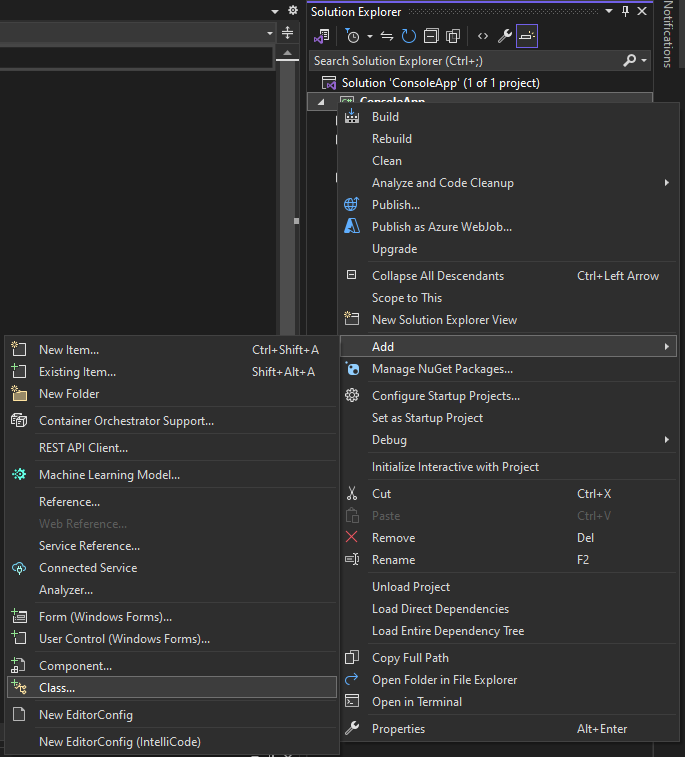
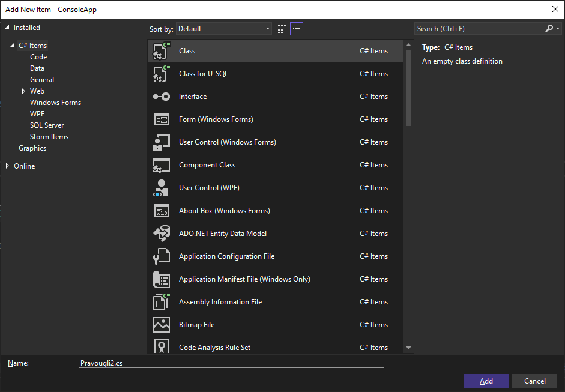
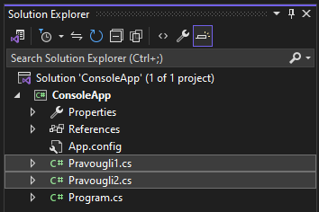

Појам парцијалне класе¶
Парцијалне класе представљају класе чија је дефиниција подељена у више изворних фајлова. Сваки изворни фајл може да садржи дефиниције чланова класе, а сви они се комбинују у тренутку компајлирања програма.
Парцијалне класе омогућавају развојним тимовима да сарађују на истој класи без конфликата и да се кôд организује на бољи начин, посебно када класа има много чланова.
Приликом креирања парцијалних класа требаш водити рачуна о неколико кључних правила:
Исти именски простор. Сви делови парцијалне класе морају бити унутар истог именског простора.
Исто име класе. Приликом дефинисања делова парцијалне класе, сви делови морају имати исто име класе.
Исти модификатор приступа.. Приликом дефинисања делова парцијалне класе, сви делови морају имати исти модификатор приступа.
Да означиш да нека класа може бити допуњена у другим фајловима, односно да може
бити парцијална, користићеш кључну реч partial. Модификатор приступа
парцијалној класи треба да се наведе пре кључне речи partial, на пример
public partial или private partial.
Нека сте ти и твој друг из клупе добили задатак да креирате класу Pravougli
у именском простору Trouglovi која обезбеђује израчунавање обима и површине
правоуглог троугла на основу дужине катета. Ти можеш, у парцијалној класи
Pravougli, да дефинишеш поља и конструктор, а твој друг, у другом делу
исте парцијалне класе, може да дефинише методе за израчунавање обима и
површине.
Када креираш нову конзолну апликацију, у Solution Explorer-у развојног
окружења Visual Studio кликни десним кликом на пројекат, одабери Add и
кликни на Class.

Назови фајл Pravougli1.cs.
У коду дефиниши именски простор Trouglovi, у њему јавну парцијалну класу
Pravougli, па у њој поља и констуктор класе.
using System;
namespace Trouglovi
{
public partial class Pravougli
{
private double a;
private double b;
private double c;
public Pravougli(double a, double b)
{
this.a = a;
this.b = b;
this.c = Math.Sqrt(a * a + b * b);
}
}
}
Твој друг може, на исти начин, да креира нову класу у фајлу Pravougli2.cs…

…па у коду дефинише именски простор Trouglovi, у њему јавну парцијалну
класу Pravougli и у њој методе за израчунавање обима и површине.
namespace Trouglovi
{
public partial class Pravougli
{
public double Obim()
{
return a + b + c;
}
public double Povrsina()
{
return (a * b) / 2;
}
}
}
Наставник ће прикључити фајлове Pravougli1.cs и Pravougli2.cs у свом
пројекту…

…додати именски простор Trouglovi и проверити функционалност вашег кода на
следећи начин:
using System;
using Trouglovi;
class Program
{
static void Main()
{
Pravougli pt = new Pravougli(3.0, 4.0);
Console.WriteLine(pt.Obim());
Console.WriteLine(pt.Povrsina());
}
}
У другом полугодишту научићеш да креираш Windows Forms апликације у којима ће аутоматски генерисани кôд често бити смештен у парцијалним класама.
Парцијалне класе могу бити угнежђене унутар неке друге класе…
partial class NekaKlasa
{
partial class UgnezdjenaKlasa
{
void Test1() { }
}
partial class UgnezdjenaKlasa
{
void Test2() { }
}
}
…па чак и унутар парцијалне класе:
partial class NekaUgnezdjenaKlasa
{
partial class UgnezdjenaKlasa
{
void Test1() { }
}
}
partial class NekaUgnezdjenaKlasa
{
partial class UgnezdjenaKlasa
{
void Test2() { }
}
}